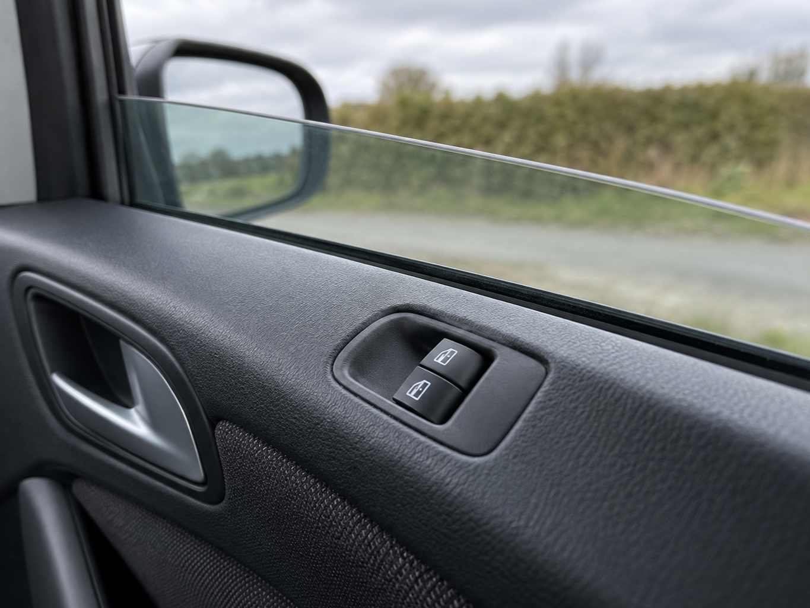
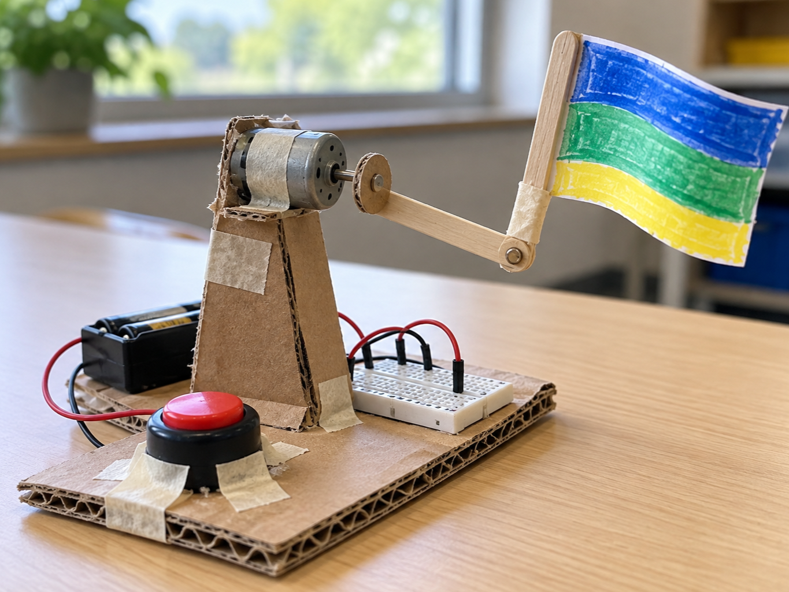
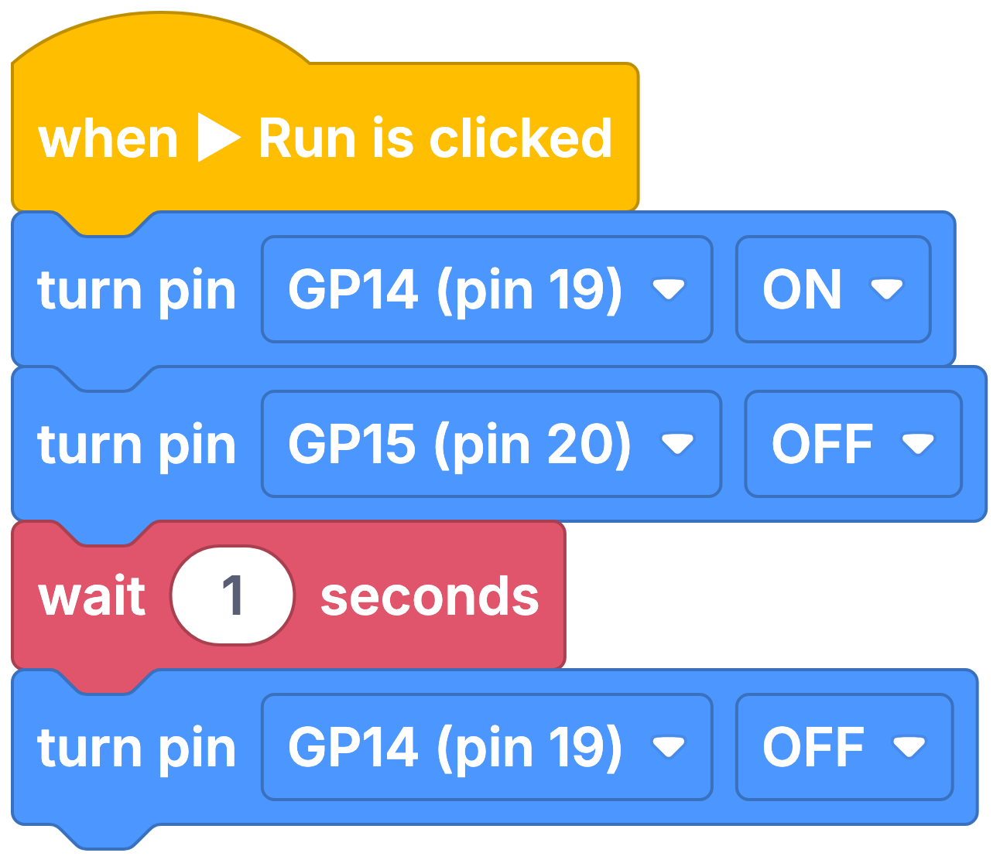

Electric car window
DetectRead window switch
DecideCan it move safely?
DoDrive requested direction
A motor driver lets a low-power GPIO control a motor that needs more current.
The L293D contains H-bridges that can send current through a motor in either direction.
Two input pins choose forwards, backwards or stop, while the chip handles the motor current.


